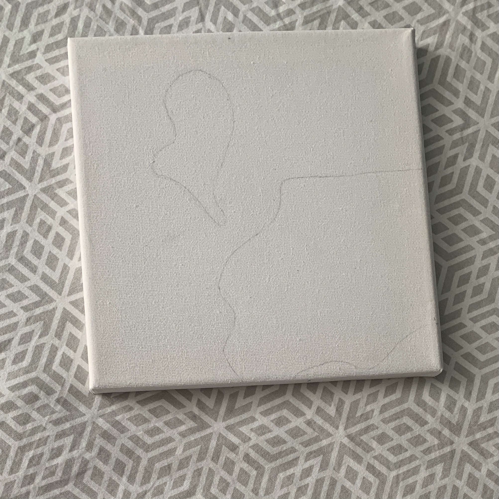
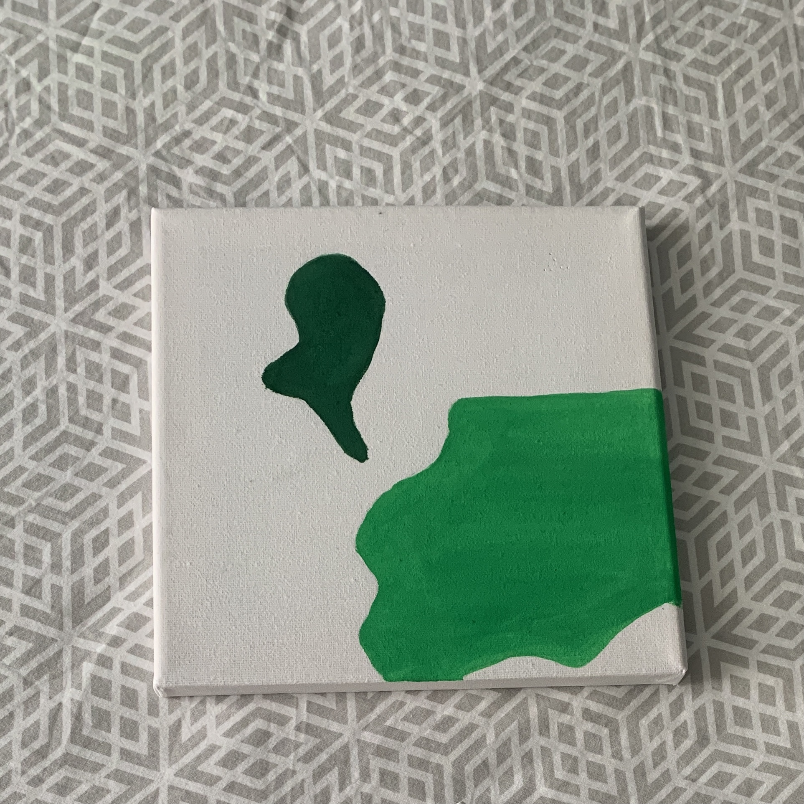

Etape 1:
Dessiner les formes à peindre sur la toile

Etape 2:
Peindre les zones souhaitées

Etape 3:
Positionner le dessin sur la toile

Etape 4:
Faire des trous à l'aide d'une aiguille en suivant les lignes du dessins

Etape 5:
Relier les points trouées avec le fil à broderie grâce à une aiguille

Etape 6:
Et ... c'est fini !!!